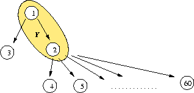

Marc Roubens' example from December 8, 2005.
Didactical crisp outranking digraph
Best unique choice problematics, the stability principle in question
The set A of potential decision actions contains 60 actions : action 1 outranks actions 2 and 3, action 2 outranks actions 4 to 60. The choice Y= {1, 2} gives an interesting best choice candidate as it verifies three of the five principles of a Rubis best choice recommendation: B1 (outranking), B2 (minimality) and B3 (effecivity).
Is it reasonnable to say that: “ ... any decision maker confronted to Y:{1,2} will consider that action 2 should not be retained as it is outranked by action 1 ” ?

Indeed, we may consider that actions 1 and 2 must be retained for a final choice as, for one, action 2 is on its own outranking 57 actions out of 60, and, for two, keeping action 2 without action 1 is inconsistent with principle B1 (outranking). Following principle B4 (stabilility) we will eventually choose action 1. But this is inconsistent. Keeping the outranking kernel {1,4,5,...,60} instead is deceiving as it renders 58 actions out of 60.
The given outranking graph presents the following minimal outranking and outranked choices:
We dont share the previous deception concerning the Rubis best choice recommendation {1,4,5,....60}. On the contrary, it is the only reasonnable one. If we keep 58 actions out of 60, this is only normal consequence of the fact that these 58 decision actions are all mutually incomparable. The given outranking graph is indeed nearly empty (It is interesting to notice here that a standard graphical representation, as shown in the figure above, is misleading the reader, as it suggests implicitely a transitive closure in the style of a Hasse diagram). And, the Rubis best choice recommendation {1,4,5,....,60} actually makes the point. How can it be indeed that these 58 actions are all incomparable ? The Rubis recommendation will correctly help concentrate the ongoing decision making process on precisely the part of the outranking graph that is here problematic.
Recommending {1,2}, the other minimal but unstable outranking choice, leaves the decision maker with a couple of decision actions that, at this moment of the decision making process, have already been judged to be comparable. Following the psychological mask effect, this recommendation can only convince the decision maker to ultimately adopt action 1 as the best choice. But this is highly inconsistent as we don't know anything of the preferences the decision maker may eventually experience between action 1 and nearly the whole set of other potential decision actions (57 out of 60 !)
If it is easy to convince a decision maker of the utility of the principles B1, B2 and B3 (minimal strict outranking choice) for ensuring the property to be indeed a potential best choice, the stability principle (B4), however, only shows its utility in the presence of partial and intransitive outrankings. Such intransitivities result from an always possible bad comparability of the decision actions, itself a consequence of missing evaluations, of balanced criteria coalitions in favour and disfavour of an outranking situation, and/or of the presence of veto situations. A best choice recommendation, to be effective, must help concentrating the decision making process on precisely these difficult and yet unexplored parts of the decision analysis. The stability principle (B4) does exactly this and therefore represents an essential pillar of the Ruby methodology.